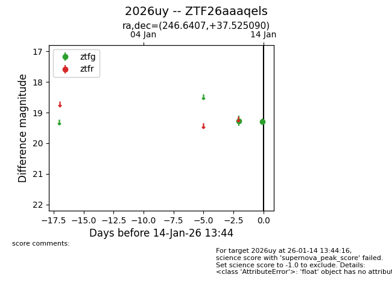
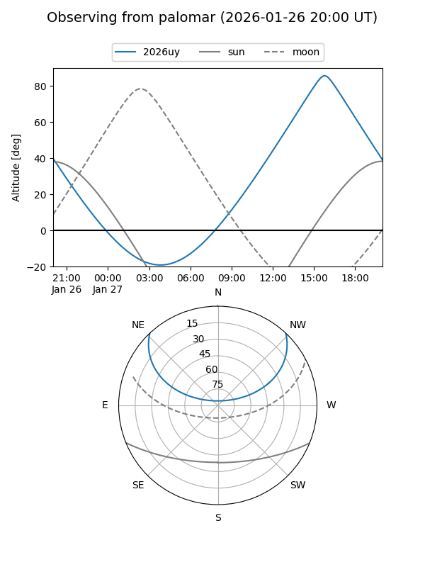
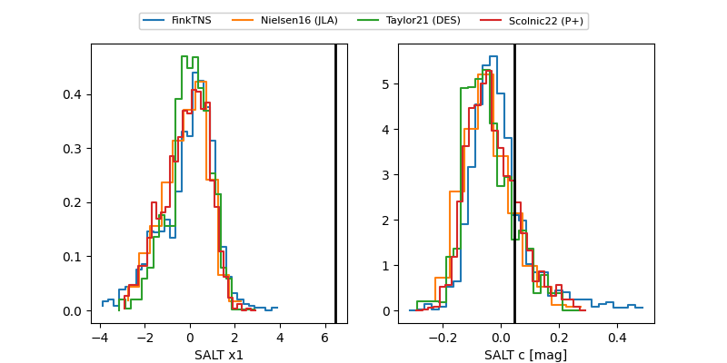

2026uy
Target 2026uy at 2026-01-26 21:31
Aliases and brokers:
FINK: link
Lasair: link
ALeRCE: link
TNS: link
YSE: link
alt names
ZTF26aaaqels (ztf,fink_ztf)
2026uy (tns,yse)
Coordinates:
equatorial (ra, dec) = 246.6407,+37.52509
equatorial (HMS+DMS) = 16:26:33.76,+37:31:30.32
galactic (l, b) = (60.1028,+44.01147)
Flags:
Photometry:
last ztfg=19.43, ztfr=19.56
5 ztfg, 4 ztfr detections
Lightcurve

Visibility


Additional plots
